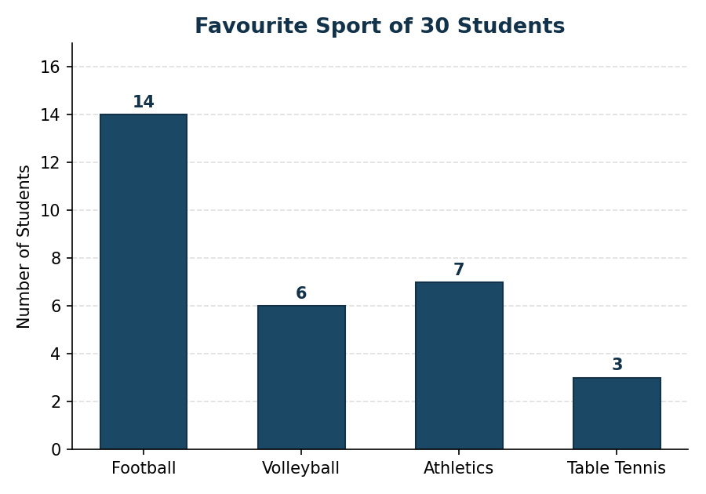
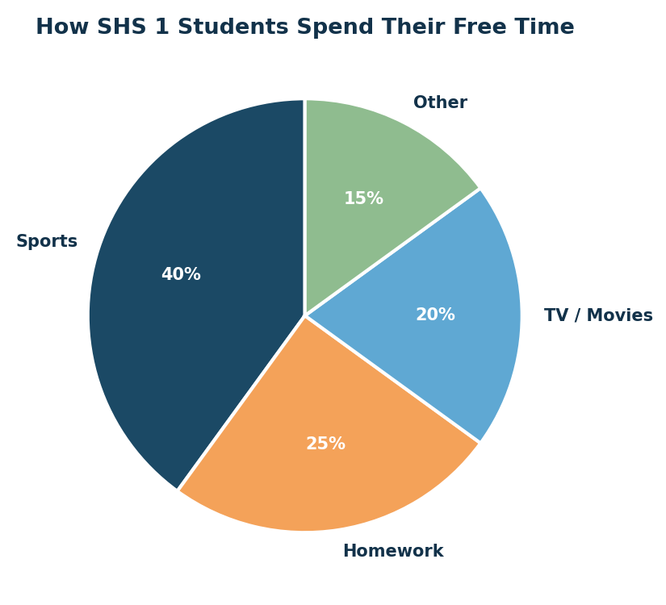
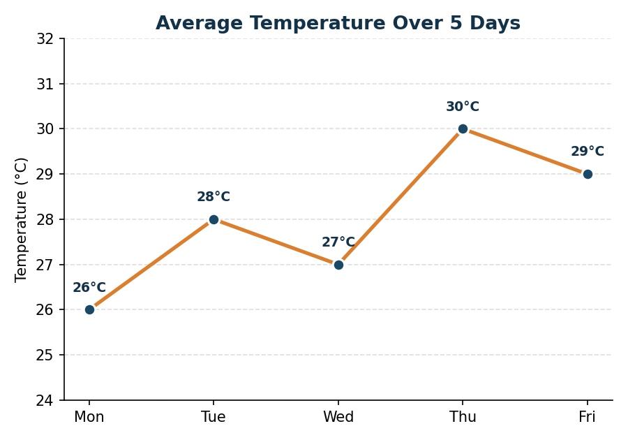
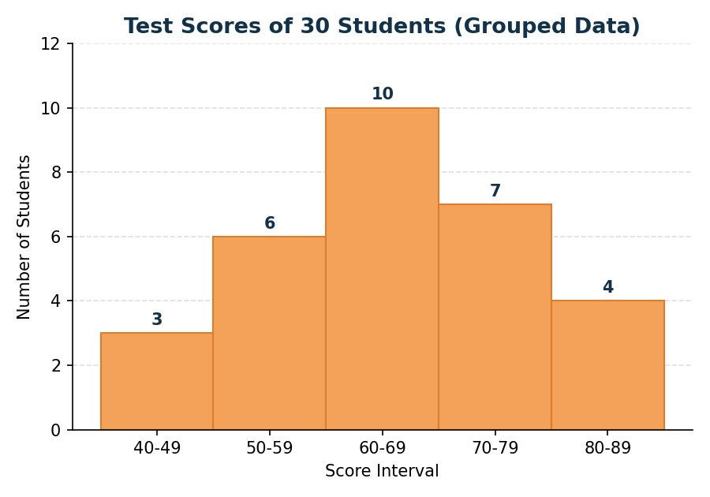
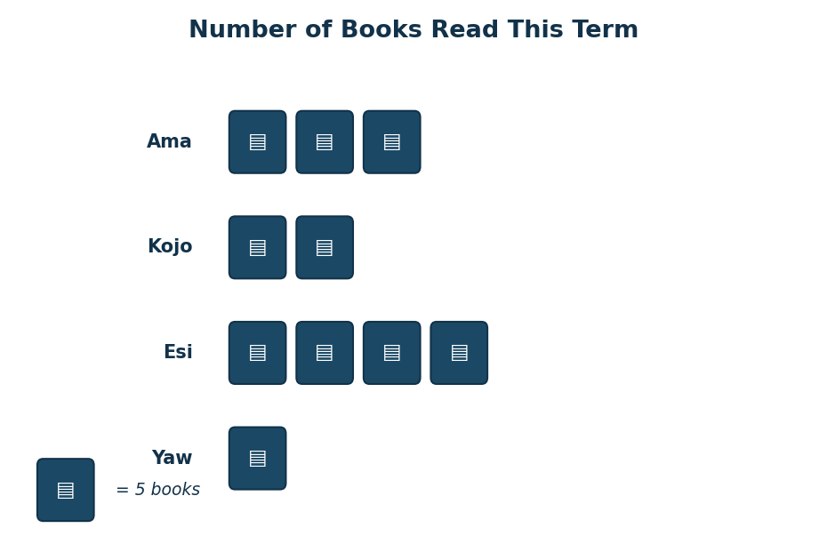

1. Why Do We Present Data Graphically?
Raw data (a long list of numbers) can be hard to interpret at a glance. A well-chosen graph turns numbers into a visual pattern that is easier to read, compare and communicate to others. Different graphs are suited to different types of data and different purposes.
2. The Bar Chart
A bar chart uses rectangular bars of equal width to represent the frequency of categories. Bars do not touch, since the data is usually categorical (discrete groups).
Best used for: comparing quantities across separate categories, e.g. favourite subjects, number of students per class.
| Sport | Football | Volleyball | Athletics | Table Tennis |
|---|---|---|---|---|
| Number of Students | 14 | 6 | 7 | 3 |

This data is best shown as a bar chart because the categories (sports) are separate and unordered, and bars make it easy to compare their heights directly.
3. The Pie Chart
A pie chart is a circle divided into sectors, where each sector's angle is proportional to the quantity it represents. Sector angle = (frequency ÷ total) × 360°.
Best used for: showing how a whole is divided into parts (proportions/percentages), e.g. how students spend their free time, market share.
Sector angle = (15 ÷ 30) × 360° = 180°

Pie charts are less suitable when there are many categories or when precise comparison of similar-sized slices is needed — a bar chart would be clearer in that case.
4. The Line Graph
A line graph plots points connected by straight lines, usually against time.
Best used for: showing trends or changes over time, e.g. temperature over a week, a school's enrolment over several years.
| Day | Mon | Tue | Wed | Thu | Fri |
|---|---|---|---|---|---|
| Temp (°C) | 26 | 28 | 27 | 30 | 29 |

A line graph is the most suitable choice here because it clearly shows the trend (rise and fall) in temperature across consecutive days — something a pie chart cannot show.
5. The Histogram
A histogram looks similar to a bar chart, but the bars represent continuous numerical data grouped into class intervals, and the bars touch each other (no gaps) since the data is continuous.
Best used for: continuous, grouped data such as heights, weights, scores or ages grouped into class intervals.
| Score Interval | 40–49 | 50–59 | 60–69 | 70–79 | 80–89 |
|---|---|---|---|---|---|
| Frequency | 3 | 6 | 10 | 7 | 4 |

A histogram is used here because scores are continuous numerical data grouped into equal class intervals, and the touching bars show that the intervals flow into one another with no gaps.
6. The Pictogram
A pictogram uses small pictures or symbols to represent a fixed quantity, with a key/legend showing what each symbol stands for.
Best used for: simple data presentation for a general or younger audience, where an appealing visual is more important than precise values.
| Student | Ama | Kojo | Esi | Yaw |
|---|---|---|---|---|
| Books Read | 15 | 10 | 20 | 5 |

A pictogram is a friendly, visual way to present this data, where each icon represents 5 books. It sacrifices some precision but is quick and appealing to read.
7. Choosing and Justifying the Right Graph
| Type of Data / Purpose | Best Graph | Why |
|---|---|---|
| Comparing separate categories | Bar Chart | Clear side-by-side comparison |
| Showing parts of a whole (%) | Pie Chart | Shows proportion at a glance |
| Showing change/trend over time | Line Graph | Shows direction of change clearly |
| Continuous grouped data | Histogram | Represents ranges without gaps |
| Simple, general-audience data | Pictogram | Visually appealing and easy to read |
When justifying a choice of graph, always refer to: (1) the type of data (categorical, continuous, or time-based), (2) the purpose (comparison, proportion, or trend), and (3) the audience who will read the graph.
Teaching Philosophy & Learning Theory
This lesson is underpinned by a constructivist philosophy, drawing on Bruner's theory of discovery learning: learners compare data sets and decide for themselves which graph communicates the information best, rather than being told a fixed rule. This is reinforced by Vygotsky's social constructivism through peer discussion and justification of choices, and by hands-on use of digital graphing tools.
Teaching & Learning Resources
- Web browser and this website (HTML/CSS)
- GeoGebra and Desmos (interactive graphing)
- YouTube instructional video
- Graph paper / mini whiteboards for hand-drawn practice